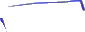
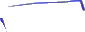
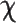
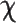

objects 0 - 2
line badness[0][2] = 0
t penalty = -130.0
x penalty = -33.0
y penalty = -130.0
We want to find the derivative with respect to x of all of this business right over here. And you might guess-- and this is definitely a function of x.

objects 3 - 4
line badness[3][4] = 0
t penalty = -665.0
x penalty = -60.0
y penalty = -665.0
x is one of the boundaries of integration for this definite integral. And you might say, well, it looks like the fundamental theorem of calculus might apply, but I'm used to seeing the x, or the function x, as the upper bound, not as the lower bound. How do I deal with this? And the key realization is to realize what happens when you switch bounds for a definite integral. And I'll do a little bit of an aside to review that.

objects 5 - 6
line badness[5][6] = 0
t penalty = -350.0
x penalty = -18.0
y penalty = -350.0


objects 7 - 8
line badness[7][8] = 0
t penalty = -0.0
x penalty = -7.0
y penalty = -0.0

objects 9 - 10
line badness[9][10] = 0
t penalty = -0.0
x penalty = -10.0
y penalty = -0.0

objects 11 - 12
line badness[11][12] = 0
t penalty = -5.0
x penalty = -21.0
y penalty = -5.0

objects 13 - 14
line badness[13][14] = 0
t penalty = -0.0
x penalty = -33.0
y penalty = -0.0

objects 15 - 16
line badness[15][16] = 0
t penalty = -0.0
x penalty = -6.0
y penalty = -0.0

objects 17 - 18
line badness[17][18] = 0
t penalty = -0.0
x penalty = -15.0
y penalty = -0.0

objects 19 - 21
line badness[19][21] = 0
t penalty = -655.0
x penalty = -470.0
y penalty = -655.0
So if I'm taking the definite integral from a to b of f of t, dt, we know that this is capital F, the antiderivative of f, evaluated at b minus the antiderivative of F evaluated at a. This is corollary to the fundamental theorem, or it's the fundamental theorem part two, or the second fundamental theorem of calculus. This is how we evaluate definite integrals. Now, let's think about what the negative of this is.

objects 22 - 24
line badness[22][24] = 0
t penalty = -315.0
x penalty = -14.0
y penalty = -315.0


objects 25 - 26
line badness[25][26] = 0
t penalty = -0.0
x penalty = -17.0
y penalty = -0.0

objects 27 - 28
line badness[27][28] = 0
t penalty = -0.0
x penalty = -19.0
y penalty = -0.0

objects 29 - 30
line badness[29][30] = 0
t penalty = -0.0
x penalty = -12.0
y penalty = -0.0

objects 31 - 32
line badness[31][32] = 0
t penalty = -0.0
x penalty = -3.0
y penalty = -0.0

objects 33 - 34
line badness[33][34] = 0
t penalty = -0.0
x penalty = -17.0
y penalty = -0.0

objects 35 - 37
line badness[35][37] = 0
t penalty = -0.0
x penalty = -26.0
y penalty = -0.0

objects 38 - 39
line badness[38][39] = 0
t penalty = -0.0
x penalty = -0.0
y penalty = -0.0

objects 40 - 41
line badness[40][41] = 0
t penalty = -0.0
x penalty = -27.0
y penalty = -0.0
So the negative of that-- of a to b of f of t, dt, is just going to be equal to the negative of this, which is equal to-- so it's the negative of f of b minus f of a, which is equal to capital F of a minus capital F of b.

objects 42 - 43
line badness[42][43] = 0
t penalty = -0.0
x penalty = -27.0
y penalty = -0.0
All I did is distribute the negative sign and then switch the two terms.


objects 44 - 46
line badness[44][46] = 0
t penalty = -345.0
x penalty = -29.0
y penalty = -345.0

objects 47 - 49
line badness[47][49] = 0
t penalty = -0.0
x penalty = -13.0
y penalty = -0.0
But this right over here is equal to the definite integral from, instead of a to b, but from b to a of f of t, dt.


objects 50 - 51
line badness[50][51] = 0
t penalty = -1590.0
x penalty = -696.0
y penalty = -1590.0
So notice, when you put a negative, that's just like switching the signs or switching the boundaries. Or if you switch the boundaries, they are the negatives of each other. So we can go back to our original problem.


objects 52 - 53
line badness[52][53] = 0
t penalty = -50.0
x penalty = -31.0
y penalty = -50.0

objects 54 - 56
line badness[54][56] = 0
t penalty = -75.0
x penalty = -22.0
y penalty = -75.0

objects 57 - 58
line badness[57][58] = 0
t penalty = -0.0
x penalty = -2.0
y penalty = -0.0

objects 59 - 60
line badness[59][60] = 0
t penalty = -300.0
x penalty = -6.0
y penalty = -300.0

 

objects 61 - 63
line badness[61][63] = 0
t penalty = -0.0
x penalty = -68.0
y penalty = -0.0


objects 64 - 65
line badness[64][65] = 0
t penalty = -0.0
x penalty = -29.0
y penalty = -0.0

objects 66 - 67
line badness[66][67] = 0
t penalty = -0.0
x penalty = -37.0
y penalty = -0.0

objects 68 - 70
line badness[68][70] = 0
t penalty = -30.0
x penalty = -29.0
y penalty = -30.0

objects 71 - 72
line badness[71][72] = 0
t penalty = -35.0
x penalty = -20.0
y penalty = -35.0
We can rewrite this as being equal to the derivative with respect to x of-- instead of this, it'll be the negative of the same definite integral but with the boundaries switched-- the negative of x with the upper boundary is x, the lower bound is 3 of the square root of the absolute value of cosine t, dt, which is equal to-- we can take the negative out front-- negative times the derivative with respect to x of all of this business. I should just copy and paste that, so I'll just copy and paste. Let me-- and paste it.

objects 73 - 75
line badness[73][75] = 0
t penalty = -125.0
x penalty = -308.0
y penalty = -125.0
So times the derivative with respect to x of all that, and now the fundamental theorem of calculus directly applies. This is going to be equal to-- we deserve a drum roll now. This is going to be equal to the negative-- can't forget the negative. And the fundamental theorem of calculus tells us that that's just going to be this function as a function of x.

objects 76 - 77
line badness[76][77] = 0
t penalty = -0.0
x penalty = -7.0
y penalty = -0.0

objects 78 - 79
line badness[78][79] = 0
t penalty = -0.0
x penalty = -27.0
y penalty = -0.0

 

objects 80 - 81
line badness[80][81] = 0
t penalty = 0
x penalty = 0
y penalty = 0